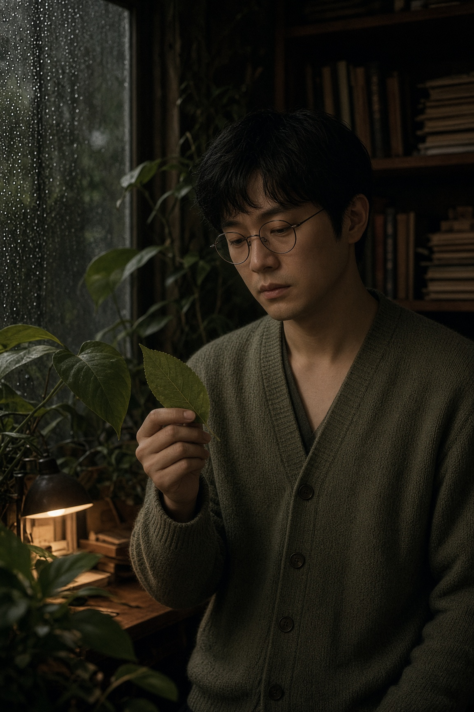
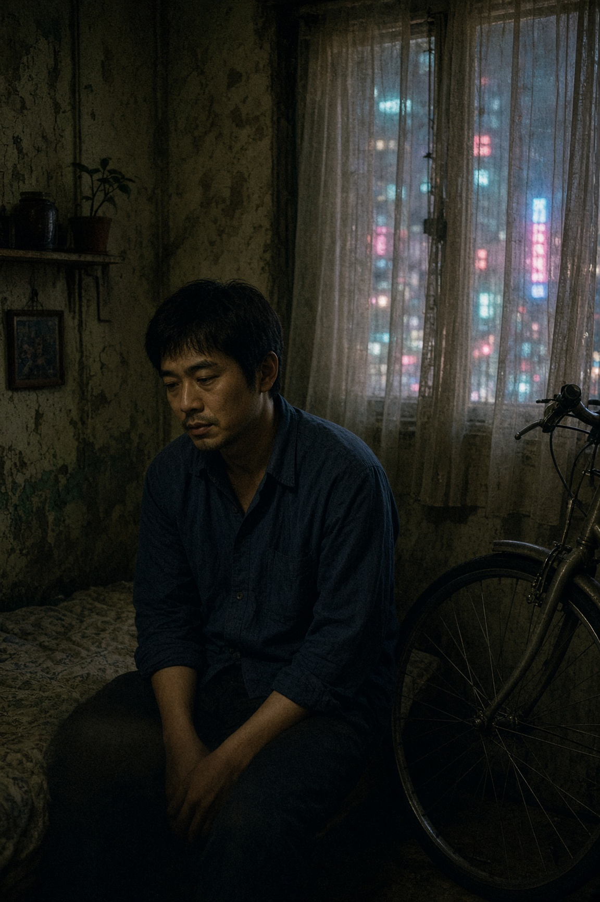
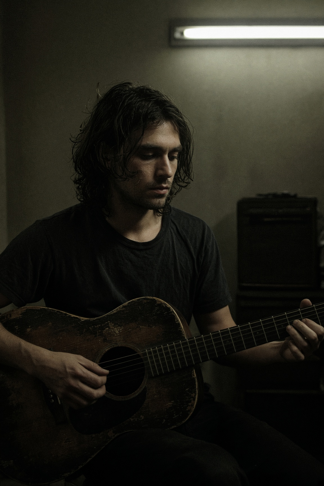
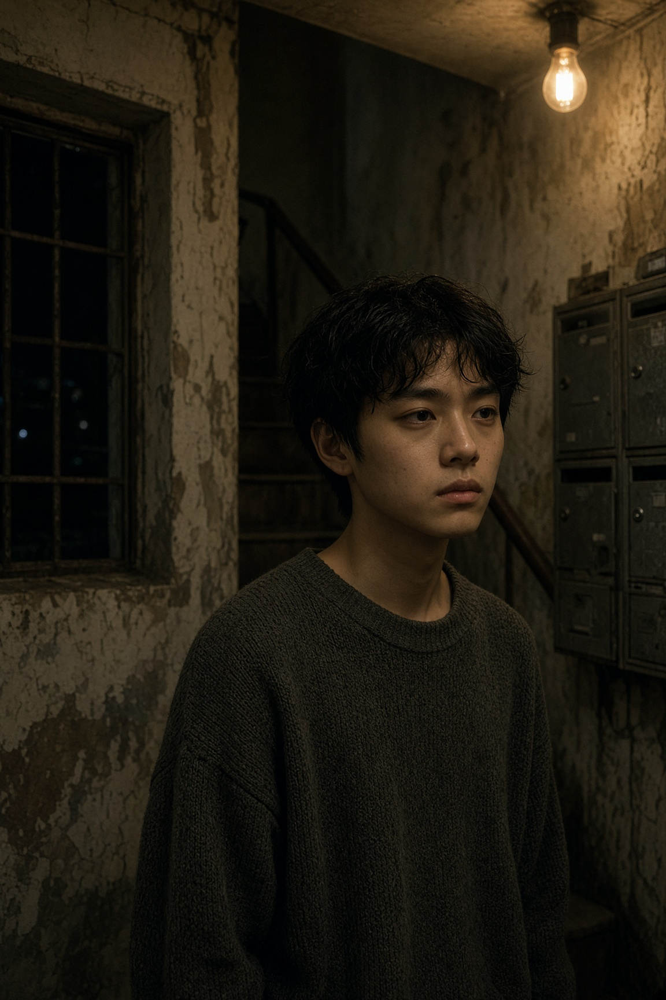

MOOD EXCHANGE
心情買賣器
每一局會遇見一個不同的人。開心時價格漲，難過時價格跌。讀日誌、對話，在對的時機買賣。起始資金 $10。




可玩的完整版本在 Grok 預覽裡：隨機開局、交易聲效、日誌與未來人。
原始碼：本倉庫。文字為簡單繁體中文，不用粵語。
GitHub 原始碼MOOD EXCHANGE
每一局會遇見一個不同的人。開心時價格漲，難過時價格跌。讀日誌、對話，在對的時機買賣。起始資金 $10。




可玩的完整版本在 Grok 預覽裡：隨機開局、交易聲效、日誌與未來人。
原始碼：本倉庫。文字為簡單繁體中文，不用粵語。
GitHub 原始碼